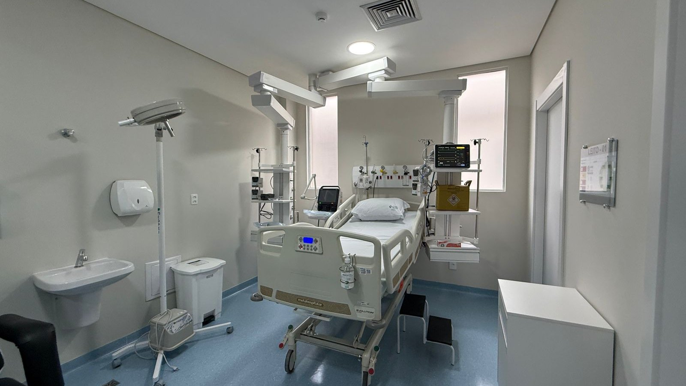

Itapema · Saúde
Itapema · SaúdeItapema abre o Saúde 24h, com médico por telefone e WhatsApp no 0800 333 7973
O serviço citado pelo secretário municipal quando falou dos avanços da rede.
A abertura oficial foi nesta terça-feira, 1º. São dez boxes individuais, um deles preparado para isolamento. A Secretaria de Estado da Saúde paga integralmente o funcionamento, e a regulação das vagas é do Governo do Estado.
Em 30 segundos · Modo de Leitura, formato original Santa Informa
O Hospital Santo Antônio, em Itapema, passou a ter 10 leitos de UTI.
A abertura oficial foi nesta terça-feira, 1º de setembro.
São 10 boxes individuais, e um deles é preparado para isolamento.
Todos os leitos têm monitor, ventilador pulmonar e bomba de infusão.
A unidade também tem ultrassom próprio e aparelho de hemodiálise.
Quem piorar dentro do hospital pode receber cuidado intensivo sem depender sempre de transferência.
A Secretaria de Estado da Saúde custeia integralmente os leitos.
O repasse é de R$ 1.200 por dia com o leito vazio, e de R$ 1.800 a R$ 2.100 com ele ocupado.
A regulação é do Estado, então a vaga pode ir para paciente de outra cidade.
O secretário estadual citou R$ 30 milhões investidos na reestruturação do hospital.
Poder PúblicoPublicada em Redação Santa Informa

Itapema passou a ter UTI dentro do Hospital Santo Antônio. A abertura oficial dos 10 leitos aconteceu nesta terça-feira, 1º de setembro, com a presença do secretário de Estado da Saúde, Diogo Demarchi Silva, do secretário municipal de Saúde, Fabrício Lazzari, o Fafá, do prefeito Alexandre Xepa, de vereadores e de equipes dos hospitais Marieta Konder Bornhausen, de Itajaí, e Ruth Cardoso, de Balneário Camboriú.
Até agora, quem piorava dentro do hospital dependia de transferência para outro município. Com a UTI na própria unidade, o cuidado intensivo pode começar ali mesmo. A Prefeitura diz que isso dá mais agilidade e mais segurança, e que a transferência deixa de ser sempre necessária. Os leitos também servem de retaguarda para as cirurgias e para o atendimento de urgência e emergência.
São 10 boxes individuais. Um deles é específico para isolamento, o que permite receber caso respiratório grave e outras situações que exigem precaução diferente. Todos os leitos têm monitor multiparamétrico, ventilador pulmonar e bomba de infusão. A unidade ainda conta com aparelho de ultrassonografia geral e cardiológica de uso exclusivo e com máquina de hemodiálise.
A habilitação dos leitos entrou no planejamento estadual da Rede de Atenção à Saúde da Foz do Rio Itajaí. Por causa disso, a Secretaria de Estado da Saúde custeia integralmente os leitos novos. Diogo Demarchi detalhou o repasse: R$ 1.200 por dia para leito vazio, e de R$ 1.800 a R$ 2.100 quando o leito está ocupado. Ele disse que o Estado optou por não esperar a liberação do Ministério da Saúde, e citou um investimento de R$ 30 milhões na reestruturação hospitalar, viabilizado por parcerias.
Um detalhe importa e costuma passar batido: a regulação dos leitos é do Governo do Estado. As vagas são ocupadas conforme os critérios técnicos da Central de Regulação, e podem atender paciente de outras cidades, de acordo com a necessidade assistencial. O leito fica em Itapema, mas não é exclusivo de quem mora aqui. Demarchi lembrou que a região da Amfri cresce, e que no inverno a doença respiratória aperta o sistema.
Fabrício Lazzari afirmou que, em um ano e oito meses, a cidade ampliou a estrutura da saúde, triplicou o número de médicos e implantou serviços novos, como a telemedicina. A UTI, na fala dele, é mais um passo dessa sequência, e serve tanto para o paciente grave quanto para dar suporte ao resto da rede.
O resumo de 30 segundos está no topo e a versão completa é o texto acima. Aqui ficam as três leituras da casa sobre o mesmo assunto.
Clara, a otimista
Ter UTI na própria cidade muda o começo da história. A família que recebe a notícia ruim não precisa esperar vaga em outro município para o cuidado intensivo começar.
E o custeio saiu resolvido antes da inauguração, o que evita o pior dos mundos: estrutura pronta, bonita e parada por falta de dinheiro para manter.
Seu Prudêncio, o criterioso
Merece atenção a regulação. Os leitos ficam em Itapema, mas quem distribui a vaga é a Central de Regulação do Estado, e ela atende toda a Foz do Rio Itajaí. Isso é correto do ponto de vista do sistema, e ao mesmo tempo significa que o morador daqui não tem prioridade automática.
Vale acompanhar o custeio no tempo. O repasse anunciado é diário e generoso, inclusive com leito vazio, mas nenhum documento público diz por quanto tempo essa regra está garantida. Uma sugestão útil: a Prefeitura e o hospital publicarem todo mês a taxa de ocupação e a origem dos pacientes. É informação simples de levantar e resolve a dúvida antes que ela vire discussão.
E é justo reconhecer o benefício. Habilitar leito com o custeio definido antes de abrir a porta é o jeito certo de fazer, e evita o problema clássico da UTI inaugurada que fecha seis meses depois.
Caco, o sarcástico
Dez leitos de UTI em Itapema. Enfim dá para passar mal sem sair da cidade.
O Estado paga R$ 1.200 por dia mesmo com o leito vazio. Nunca uma cama desocupada rendeu tanto.
E o ultrassom é de uso exclusivo. Exclusivo. A palavra que aqui todo mundo já aprendeu a ler em tapume de obra.
Fontes: Prefeitura de Itapema, comunicado publicado em 1º de setembro de 2026, de onde saem os 10 leitos, a composição dos boxes, a lista de equipamentos, a habilitação na Rede de Atenção à Saúde da Foz do Rio Itajaí, os valores de repasse diário, o investimento de R$ 30 milhões, a regulação estadual das vagas e as declarações do secretário de Estado da Saúde, Diogo Demarchi Silva, e do secretário municipal de Saúde, Fabrício Lazzari. A foto do topo é de divulgação da Prefeitura e registra um dos boxes da unidade.
Itapema · SaúdeO serviço citado pelo secretário municipal quando falou dos avanços da rede.
 Itapema · Saúde
Itapema · SaúdeA mesma região de saúde que agora divide a regulação dos leitos novos.
Outro serviço de saúde do município, com um ano de números na mesa.